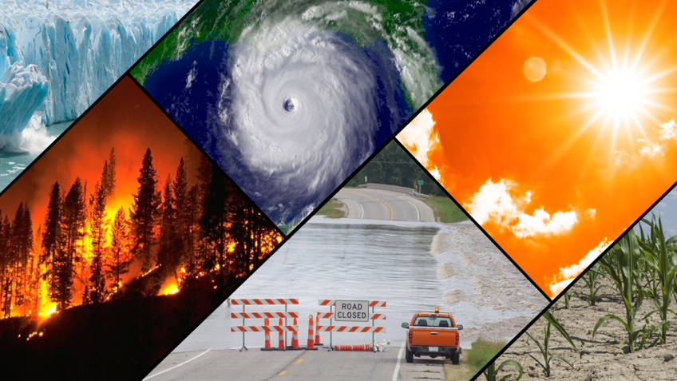

Advances in Artificial Intelligence
Author: Tech Insights
Date: March 10, 2025
Artificial Intelligence (AI) continues to reshape industries, from healthcare to finance. New AI-powered assistants are improving coding efficiency, helping developers write and debug code faster.
As AI capabilities grow, ethical concerns around automation and job displacement remain topics of debate. The future of AI looks promising, but regulation and responsible development are crucial.
Climate Change and Extreme Weather Events
Author: Environmental Watch
Date: March 9, 2025

The effects of climate change are becoming more severe, with increasing extreme weather events such as storms and heatwaves. The recent ex-Tropical Cyclone Alfred in Australia left over 330,000 buildings without power.
Countries are working on sustainability initiatives to mitigate these disasters, including the shift to renewable energy and stricter carbon emission policies.
Economic Uncertainty Amid Trade Policies
Author: Global Markets Review
Date: March 8, 2025
Economic instability is on the rise due to ongoing trade tariff discussions. Former President Trump recently warned about a potential recession linked to new tariff policies.
Markets are reacting cautiously as global supply chains continue to be affected by trade restrictions. Investors are advised to monitor international economic trends closely.